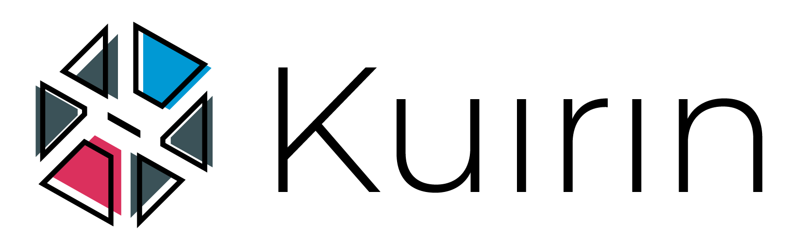

<nav class="nav">
  <figure routerLink="/main" id="logo" class="">
    <button mat-button>
      
    </button>
  </figure>
  <button
    mat-button
    *ngIf="router.url === '/main'"
    (click)="openDialog()"
    class="mobile"
  >
    <mat-icon>search</mat-icon> <small>Pesquisar usuário</small>
  </button>
  <button
    mat-button
    class="profile-menu"
    color="light"
    matTooltip="Allison Julio"
    [matMenuTriggerFor]="ProfileMenu"
  >
    <span class="user">
      
      <strong>Allison</strong>
    </span>
  </button>
  <mat-menu #ProfileMenu="matMenu" yPosition="below">
    <button mat-menu-item routerLink="/profile">Perfil</button>
    <button mat-menu-item routerLink="/splash">Sair</button>
  </mat-menu>
</nav>
